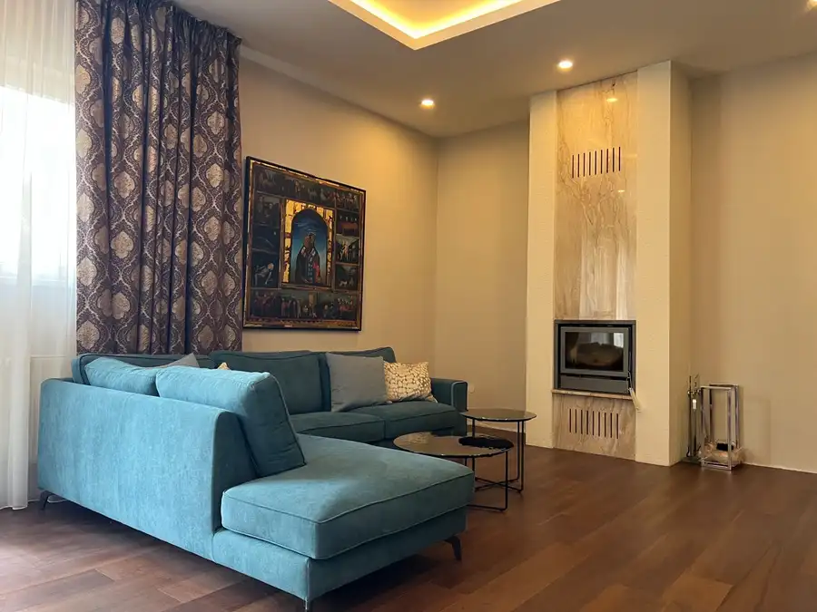
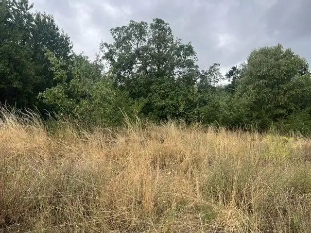
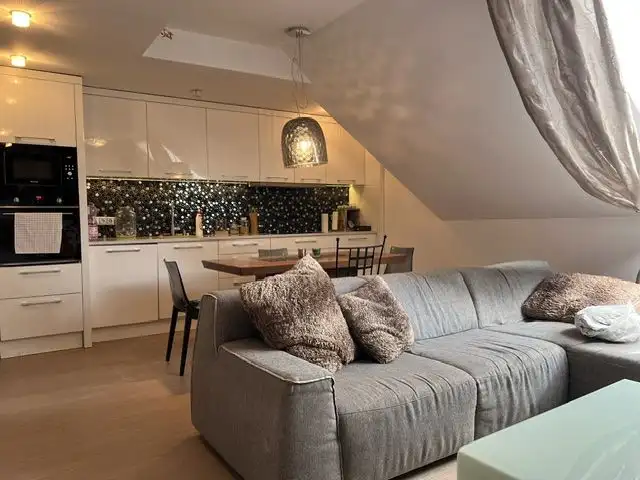

Taliansko Bibione 3 izbový rekreačný apartmán na predaj
Bibione, BIBIONE
- Dispozícia3-izbový
- Plocha100 m²
- Stavúplne prerobený
- Energetická triedaE
O nehnuteľnosti
Predstavte si, že ráno si vypijete kávu vo vlastnej záhradke, nasadnete na bicykel a o chvíľu ste pri mori. Večer sa môžete prechádzať romantickým Caorle, dať si zmrzlinu v Lignano Sabbiadoro, objavovať čaro Benátok alebo si jednoducho vychutnávať pokoj autentického talianskeho života. Prípadne zbehnúť na Prosecco do Trevisa ?
Na predaj ponúkame kompletne zrekonštruovaný, nízkoenergetický apartmán s výmerou 100 m² nachádzajúci sa v rodinnom dome, ktorý ponúka samostatný vstup a vlastnú 100 m2 záhradku, vďaka čomu poskytuje súkromie a komfort bývania. Byt je na druhom nadzemnom podlaží rodinného domu, má samostanú kuchyňu, obývaciu izbu, dve spálne a dve kúpelne vybavené sprchovacím kútom. Je kompletne zariadený a momentálne sa využíva na turistický prenájom. Celý dom prešiel kompletnou rekonštrukciou. Kúrenie v byte je zabezpečené novým plynovým kondenzačným kotlom, v celom byte je nová klimatizácia a ohrev vody v teplých mesiacoch zabezpečujú solárne panely. Vďaka novému technickému vybavniu je apartmán zaradený do eko energetickej triedy.
Nachádza sa v meste San Michele al Tagliamento, len 15 km od Bibione, Lignano Sabbiadoro a nádhernej prírodnej pláže La Brussa. A len 580 km od hraníc Slovenska. V blízkom okolí nájdete cyklotrasy vedúce až k moru, prírodnú rezerváciu s bezplatnými panenskými plážami, možnosti vodných športov aj príjemnú atmosféru typického talianskeho mesta, kde sa žije pokojne počas celého roka.
Veľkou výhodou je autobusová zastávka len pár krokov od domu s priamym spojením na letisko do Benátok, do mesta Benátky, Bibione aj na železničnú stanicu Latisana.
Apartmán je vhodný na celoročné bývanie a zároveň výbornou investičnou príležitosťou. Je úspešne prenajímaný turistom a počas sezóny býva pravidelne plne obsadený, takže nový majiteľ môže okamžite pokračovať v zabehnutom prenájme.
Či už hľadáte druhý domov pri mori, miesto na pokojný život alebo nehnuteľnosť s okamžitým výnosovým potenciálom, táto nehnuteľnosť spája všetko na jednom mieste.
Parametre
| Rozloha pozemku | 100 m² |
|---|---|
| Zastavaná plocha | 100 m² |
| Úžitková plocha | 100 m² |
| Poschodie | vyššie poschodie |
| Počet poschodí | 1 |
| Počet izieb | 3 |
| Stav | úplne prerobený |
| Voda | verejný vodovod |
| Kúpeľňa | áno |
| Vykurovanie | vlastné – kombinované |
| Balkón | áno - 1 |
| Parkovanie | vonkajšie |
| Inžinierske siete | áno |
| Postavené z | tehla |
| Zariadenie | zariadený |
| Zateplený objekt | nie |
| Klimatizácia | áno |
| Energetický certifikát | E |
| Predzáhradka | áno |
| Terén | rovina |
| Prístupová cesta | asfaltová cesta |
| Dátum zverejnenia | 18. 8. 2026 |
Kde to je
Mohlo by Vás zaujímať

Byt10 Cena dohodou4 izbový byt v historickej vile na Lermontovovej , Bratislava I Historické jadro, Bratislava 4-izbový V srdci bratislavských Palisád ponúkame jedinečný 4-izbový byt s výmerou 158 m², situovaný v reprezentatívnej historickej vile v jednej z…
Pozemok7 600 000 €Na predaj pozemok so stavebným povolením – Horský park, Staré Mesto Staré Mesto, Bratislava I. 701 m² Ponúkame na predaj stavebný pozemok s rozlohou 701 m2 v lukratívnej lokalite Horského parku v Bratislava- Staré mesto. Pozemok je mierne svahovitý a…
Byt10 Cena dohodouPredaj 3-izbového bytu na Lermontovovej , Bratislava I Historické jadro, Bratislava 3-izbový75 m²2. podlažie Ponúkame na predaj exkluzívny 3 izb. byt po kompletnej rekonštrukcii v historickej vile (Gessayov dom) na Lermontovovej ulici, na Palisádach.…